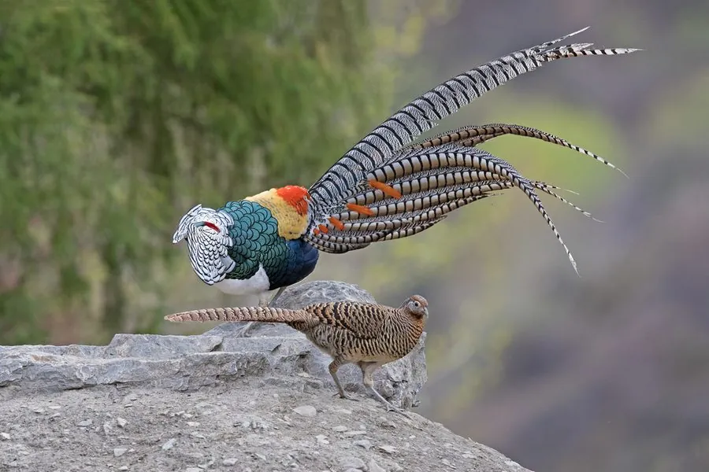

鸟类 · 动物界
白腹锦鸡 Chrysolophus amherstiae

中国西南山地的雉类，雄鸟头顶墨绿、颈披白色带黑纹的羽披，腹部雪白，尾羽长达一米，与红腹锦鸡是近亲。
- 分类
- 门脊索动物门纲鸟纲目鸡形目科雉科属锦鸡属
- 栖息环境
- 中国西南海拔 1500–4000 m 的常绿阔叶林、竹林、灌丛与林缘
- 地理分布
- 中国云南、四川、贵州、西藏东南部及缅甸东北部
- 保护级别
- IUCN 无危（LC）；中国国家二级保护动物
物种志
白腹锦鸡雄鸟连尾体长可达 130–170 cm，体重约 0.7–1 kg；雌鸟约 60–70 cm，通体棕褐并密布黑褐色细纹。雄鸟头顶生墨绿色金属光泽的冠羽，颈后披着一圈白色带黑边的羽披，背部墨绿，胸腹雪白，尾羽白色并间有黑色横斑，长可超过 1 m。
它们分布于中国云南、四川、贵州及西藏东南部的山地，也见于缅甸东北部，栖息于海拔 1500–4000 m 的常绿阔叶林、竹林与灌丛。白腹锦鸡多在林下地面觅食，食物包括植物嫩叶、种子、果实和昆虫，受惊时快速奔跑或短距离滑翔。繁殖期在 4–6 月，雄鸟围绕雌鸟展翅、翘尾炫耀；每窝产卵 5–12 枚，由雌鸟孵化。因羽饰美丽曾被大量捕猎，现为中国国家二级保护动物。
形态与习性
- 食性植物嫩叶、种子、果实和昆虫
- 体长雄鸟连尾 130–170 cm，雌鸟 60–70 cm
- 体重雄鸟约 0.7–1 kg
- 海拔1500–4000 m 的山地森林与灌丛
- 繁殖4–6 月，每窝 5–12 枚
- 保护中国国家二级保护动物
趣味知识
- 白腹锦鸡与红腹锦鸡是近亲，一个腹部雪白，一个腹部通红。
- 雄鸟的尾羽可长过 1 m，展开时白底黑纹，十分醒目。
- 求偶时雄鸟会侧身展翅、翘起长尾，绕雌鸟转圈炫耀。